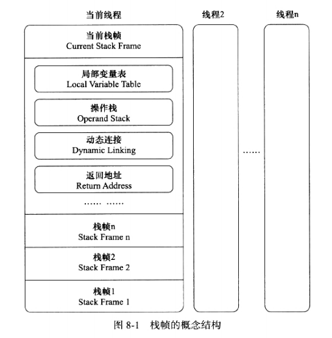
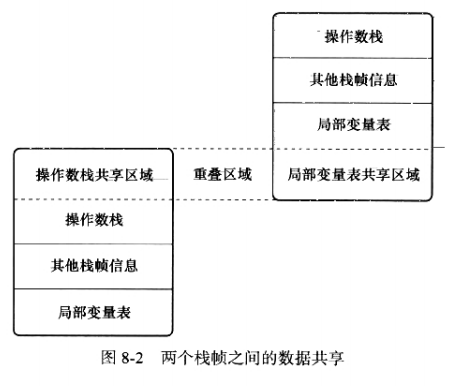
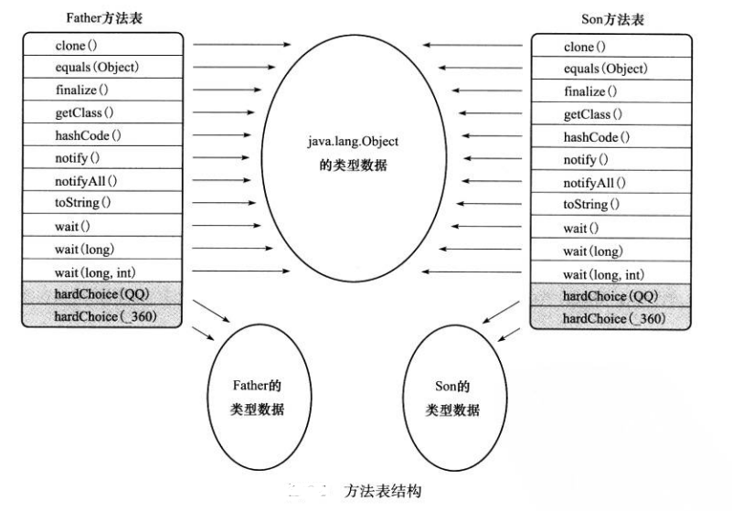

<!DOCTYPE HTML>
<html lang="">
<head><meta name="generator" content="Hexo 3.8.0">
    <!--Setting-->
    <meta charset="UTF-8">
    <meta name="viewport" content="width=device-width, user-scalable=no, initial-scale=1.0, maximum-scale=1.0, minimum-scale=1.0">
    <meta http-equiv="X-UA-Compatible" content="IE=Edge,chrome=1">
    <meta http-equiv="Cache-Control" content="no-siteapp">
    <meta http-equiv="Cache-Control" content="no-transform">
    <meta name="renderer" content="webkit|ie-comp|ie-stand">
    <meta name="apple-mobile-web-app-capable" content="杨柳潇的博客">
    <meta name="apple-mobile-web-app-status-bar-style" content="black">
    <meta name="format-detection" content="telephone=no,email=no,adress=no">
    <meta name="browsermode" content="application">
    <meta name="screen-orientation" content="portrait">
    <link rel="dns-prefetch" href="http://yangliuxiao.top">
    <!--SEO-->

    <meta name="keywords" content="Java,面试,JVM">


    <meta name="description" content="运行时栈帧结构
方法调用

虚拟机字节码执行引擎执行引擎是Java虚拟机最核心的组成部分之一，“虚拟机”是一个相对于“物理机”的概念，这两种机器都有代码执行能力，其区别在于：
①物理机：执行引擎...">


<meta name="robots" content="all">
<meta name="google" content="all">
<meta name="googlebot" content="all">
<meta name="verify" content="all">

    <!--Title-->


<title>深入理解Java虚拟机（五） | 杨柳潇的博客</title>


    <link rel="alternate" href="/atom.xml" title="杨柳潇的博客" type="application/atom+xml">


    <link rel="icon" href="/favicon.jpg">

    


<link rel="stylesheet" href="/css/bootstrap.min.css?rev=3.3.7">
<link rel="stylesheet" href="/css/font-awesome.min.css?rev=4.5.0">
<link rel="stylesheet" href="/css/style.css?rev=@@hash">


    
	<div class="hide">
		<script type="text/javascript">
			var cnzz_protocol = (("https:" == document.location.protocol) ? " https://" : " http://");document.write(unescape("%3Cspan class='cnzz_stat_icon_1263868967 hide' %3E%3Cscript%20src%3D%22https%3A%2F%2Fs95.cnzz.com%2Fz_stat.php%3Fweb_id%3D1272564536%22%3E%3C%2Fscript%3E%3C/span%3E%3Cscript src='" + cnzz_protocol + "s19.cnzz.com/z_stat.php%3Fid%3D1263868967%26show%3Dpic1' type='text/javascript'%3E%3C/script%3E"));
		</script>
	</div>


    

</head>

</html>
<!--[if lte IE 8]>
<style>
    html{ font-size: 1em }
</style>
<![endif]-->
<!--[if lte IE 9]>
<div style="ie">你使用的浏览器版本过低，为了你更好的阅读体验，请更新浏览器的版本或者使用其他现代浏览器，比如Chrome、Firefox、Safari等。</div>
<![endif]-->

<body>
    <header class="main-header" style="background-image:url(/./img/star.gif)">
    <div class="main-header-box">
        <a class="header-avatar" href="/" title="Mute">
            
        </a>
        <div class="branding">
        	<!--<h2 class="text-hide">Snippet主题,从未如此简单有趣</h2>-->
            
                 
            
    	</div>
    </div>
</header>
    <nav class="main-navigation">
    <div class="container">
        <div class="row">
            <div class="col-sm-12">
                <div class="navbar-header"><span class="nav-toggle-button collapsed pull-right" data-toggle="collapse" data-target="#main-menu" id="mnav">
                    <span class="sr-only"></span>
                        <i class="fa fa-bars"></i>
                    </span>
                    <a class="navbar-brand" href="http://yangliuxiao.top">杨柳潇的博客</a>
                </div>
                <div class="collapse navbar-collapse" id="main-menu">
                    <ul class="menu">
                        
                            <li role="presentation" class="text-center">
                                <a href="/"><i class="fa "></i>Home</a>
                            </li>
                        
                            <li role="presentation" class="text-center">
                                <a href="/archives/"><i class="fa "></i>时间轴</a>
                            </li>
                        
                    </ul>
                </div>
            </div>
        </div>
    </div>
</nav>
    <section class="content-wrap">
        <div class="container">
            <div class="row">
                <main class="col-md-8 main-content m-post">
                    <p id="process"></p>
<article class="post">
    <div class="post-head">
        <h1 id="深入理解Java虚拟机（五）">
            
	            深入理解Java虚拟机（五）
            
        </h1>
        <div class="post-meta">
    
        <span class="categories-meta fa-wrap">
            <i class="fa fa-folder-open-o"></i>
            <a class="category-link" href="/categories/JVM/">JVM</a>
        </span>
    

    
        <span class="fa-wrap">
            <i class="fa fa-tags"></i>
            <span class="tags-meta">
                
                    <a class="tag-link" href="/tags/JVM/">JVM</a> <a class="tag-link" href="/tags/Java/">Java</a> <a class="tag-link" href="/tags/面试/">面试</a>
                
            </span>
        </span>
    

    
        
        <span class="fa-wrap">
            <i class="fa fa-clock-o"></i>
            <span class="date-meta">2018/05/25</span>
        </span>
        
    
</div>
            
            
    </div>
    
    <div class="post-body post-content">
        <p><a href="#运行时栈帧结构">运行时栈帧结构</a></p>
<p><a href="#方法调用">方法调用</a></p>
<hr>
<h3 id="虚拟机字节码执行引擎"><a href="#虚拟机字节码执行引擎" class="headerlink" title="虚拟机字节码执行引擎"></a>虚拟机字节码执行引擎</h3><p>执行引擎是Java虚拟机最核心的组成部分之一，“虚拟机”是一个相对于“物理机”的概念，这两种机器都有代码执行能力，其区别在于：</p>
<p><strong>①物理机</strong>：执行引擎直接建立在处理器、硬件、指令集和操作系统层面上的</p>
<p><strong>②虚拟机</strong>：执行引擎由自己实现，可以自行制定指令集与执行引擎的体系结构</p>
<ul>
<li>字节码文件 —&gt; <strong>虚拟机字节码执行引擎（字节码解析）</strong> —&gt; 执行结果</li>
</ul>
<p><strong>虚拟机字节码执行引擎</strong>：</p>
<blockquote>
<ul>
<li><p>Java虚拟机规范中制定了虚拟机字节码执行引擎的<strong>统一外观（Facade）</strong></p>
</li>
<li><p>而执行引擎有<strong>不同的虚拟机实现</strong>，在不同实现中，可能会有<strong>解释执行</strong>（通过解释器执行）、<strong>编译执行</strong>（通过即时编译器产生本地代码执行），也可能<strong>两者皆备</strong>，但从外观上看，所有不同实现的虚拟机执行引擎都是一致的。</p>
</li>
</ul>
</blockquote>
<hr>
<h4 id="运行时栈帧结构"><a href="#运行时栈帧结构" class="headerlink" title="运行时栈帧结构"></a>运行时栈帧结构</h4><blockquote>
<p>①栈帧是用于支持虚拟机进行方法调用和方法执行的数据结构</p>
<p>②是虚拟机运行时数据区中的虚拟机栈的栈元素</p>
<p>③存储了方法的<strong>局部变量表</strong>、<strong>操作数栈</strong>、<strong>动态连接</strong>、<strong>方法返回地址</strong>等</p>
<p>④一个栈帧需要多少内存在编译器已确定，不受运行期影响</p>
<p>⑤对活动线程来说，在栈顶的栈帧才是有效的（执行引擎的所有字节码指令都只针对当前栈帧进行操作），称为<strong>当前栈帧</strong>，与这个栈帧相关联的方法称为<strong>当前方法</strong>。</p>
<p></p>
</blockquote>
<p> <strong>1. 局部变量表</strong></p>
<blockquote>
<p>①局部表量表用来<strong>存储方法参数和方法内定义的局部变量</strong>，在编译时，Code属性中的max_local就定义了其最大容量。</p>
<p>②局部变量表的基本存储单位是变量槽（Variable Slot），Slot的长度和虚拟机相关，但是VM规范指明，每个Slot要满足存储一些基本的数据类型（像int这种<strong>32位的数据类型</strong>）。<strong>对于64位的基本数据类型，虚拟机会以高位对齐的方式分配两个连续地Slot空间</strong></p>
</blockquote>
<ul>
<li><p><strong>类变量有两次赋初始值的过程</strong>，在“准备”阶段会被赋予<strong>系统初始值（类型零值）</strong>，因此，即使在初始化阶段程序员没有为类变量赋值也没有关系。</p>
</li>
<li><p><strong>局部变量定义了但没有赋初始值是不能使用的。</strong></p>
<p><strong>2. 操作数栈</strong></p>
</li>
</ul>
<blockquote>
<p>①操作数栈的最大深度也是<strong>编译时确定</strong>好的，存于Code属性表中</p>
<p>②操作数栈的每一个元素可以是任意的Java数据类型，包括long和double，<strong>32位占栈容量为1，64位占2</strong></p>
<p>③当一个方法开始执行的时候，操作数栈是空的，在方法执行的过程中，不断的会有入栈和出栈的操作</p>
<p>④操作数栈中元素的数据类型必须和当前要执行的字节码指令类型严格匹配，不然会报错</p>
<p>⑤在概念模型中，栈帧是相互独立的。但在大多VM中，为了<strong>减少额外的参数赋值传递</strong>，会让<strong>上面栈帧的局部变量表共享区域和下面栈帧操作数栈共享区域重叠</strong></p>
<p></p>
<p>⑥Java虚拟机是基于栈的执行引擎，其中栈就是指操作数栈</p>
</blockquote>
<p> <strong>3. 动态连接</strong></p>
<blockquote>
<p>①每个栈帧都持有一个指向运行时常量池中该栈帧所属方法的引用，持有这个引用是为了支持方法调用过程中的动态链接</p>
<p>②符号引用一部分会在类加载阶段直接化为直接引用，这称为静态解析，另一部分会在运行时进行动态解析</p>
</blockquote>
<p> <strong>4. 方法返回地址</strong></p>
<p>当一个方法开始执行后，只有两种方式可以退出这个方法。</p>
<blockquote>
<p>① 遇到了任意一个方法返回的字节码指令，这种退出方法的方式称为正常完成出口，正常退出时，<strong>调用者的PC计数器的值可以作为返回地址</strong></p>
<p>② 在方法执行过程中遇到了异常，且异常没有在方法体内得到处理，就会导致方法退出。这种退出方式称为异常完成出口。异常退出时，不会给它的上层调用者产生任何返回值。<strong>返回地址通过异常处理器表来确定</strong></p>
</blockquote>
<p> <strong>5. 附加信息</strong></p>
<blockquote>
<p>虚拟机规范允许具体的虚拟机实现增加一些规范里没有描述的信息到栈帧之中，例如与调试相关的信息，这部分完全取决于具体的虚拟机实现</p>
</blockquote>
<hr>
<h4 id="方法调用"><a href="#方法调用" class="headerlink" title="方法调用"></a>方法调用</h4><p>方法调用<strong>唯一任务的就是确定调用方法的版本（即调用哪一个方法）</strong>，不涉及方法内部的运行过程。</p>
<ul>
<li><p>Class文件的编译过程中<strong>不包含传统编译中的连接步骤</strong>，<em>一切方法调用在Class文件里面存储的都只是符号引用，而不是方法在实际运行时内存布局中的入口地址（直接引用）</em>。<strong>这样做的优点</strong>是赋予了Java更强大的动态扩展能力，而<strong>缺点</strong>是Java方法调用更复杂，Java需要在类加载阶段甚至是运行时才能决定所调用目标方法的直接引用</p>
<p><strong>1. 解析</strong></p>
</li>
</ul>
<blockquote>
<p>如果方法在真正运行之前就可以<strong>确定调用的版本</strong>，并且<strong>在运行时是不可变的</strong>（“编译器可知，运行期不可变”），则在类加载的解析阶段就会转换为可确定的直接引用，这类方法的调用称为<strong>解析</strong>。采用这种调用方式的方法一般是<strong>静态方法和私有方法</strong>，前者与类型直接关联，后者在外部不可被访问，所以都没法重写和改变。</p>
<p>在类加载的时候就把符号引用解析为该方法的直接引用，这些方法可以称为<strong>非虚方法：①静态方法 ②私有方法 ③实例构造器 ④父类方法 ⑤final修饰的方法</strong></p>
</blockquote>
<p> <strong>2. 分派</strong></p>
<ul>
<li><p><strong>“多态性”</strong>的一些基本体现。如“重载”和“重写”在JVM中怎么实现的。</p>
</li>
<li><p>分派调用可能是静态也可能是动态；根据分派依据的宗量数可分为单分派、多分派。</p>
</li>
<li><p><strong>“解析”与“分派”并不是二选一的排他关系，而是在不同层次上去筛选、确定目标方法的过程。</strong></p>
</li>
</ul>
<p><strong>①静态分派</strong></p>
<blockquote>
<figure class="highlight java"><table><tr><td class="gutter"><pre><span class="line">1</span><br><span class="line">2</span><br><span class="line">3</span><br><span class="line">4</span><br><span class="line">5</span><br><span class="line">6</span><br><span class="line">7</span><br><span class="line">8</span><br><span class="line">9</span><br><span class="line">10</span><br><span class="line">11</span><br><span class="line">12</span><br><span class="line">13</span><br><span class="line">14</span><br><span class="line">15</span><br><span class="line">16</span><br><span class="line">17</span><br><span class="line">18</span><br><span class="line">19</span><br><span class="line">20</span><br><span class="line">21</span><br><span class="line">22</span><br><span class="line">23</span><br><span class="line">24</span><br><span class="line">25</span><br><span class="line">26</span><br><span class="line">27</span><br><span class="line">28</span><br><span class="line">29</span><br><span class="line">30</span><br><span class="line">31</span><br><span class="line">32</span><br><span class="line">33</span><br></pre></td><td class="code"><pre><span class="line">&gt; <span class="keyword">public</span> <span class="class"><span class="keyword">class</span> <span class="title">StaticDispatch</span></span>&#123;</span><br><span class="line">&gt; </span><br><span class="line">&gt;     <span class="keyword">static</span> <span class="keyword">abstract</span> <span class="class"><span class="keyword">class</span> <span class="title">Human</span></span>&#123;</span><br><span class="line">&gt;     &#125;</span><br><span class="line">&gt; </span><br><span class="line">&gt;     <span class="keyword">static</span> <span class="class"><span class="keyword">class</span> <span class="title">Man</span> <span class="keyword">extends</span> <span class="title">Human</span></span>&#123;</span><br><span class="line">&gt;     &#125;</span><br><span class="line">&gt; </span><br><span class="line">&gt;     <span class="keyword">static</span> <span class="class"><span class="keyword">class</span> <span class="title">Woman</span> <span class="keyword">extends</span> <span class="title">Human</span></span>&#123;</span><br><span class="line">&gt;     &#125;</span><br><span class="line">&gt; </span><br><span class="line">&gt;     <span class="function"><span class="keyword">public</span> <span class="keyword">void</span> <span class="title">sayHello</span><span class="params">(Human guy)</span> </span>&#123;</span><br><span class="line">&gt;         System.out.println(<span class="string">"hello,guy!"</span>);</span><br><span class="line">&gt;     &#125;</span><br><span class="line">&gt; </span><br><span class="line">&gt;     <span class="function"><span class="keyword">public</span> <span class="keyword">void</span> <span class="title">sayHello</span><span class="params">(Man man)</span> </span>&#123;</span><br><span class="line">&gt;         System.out.println(<span class="string">"hello,gentleman!"</span>);</span><br><span class="line">&gt;     &#125;</span><br><span class="line">&gt; </span><br><span class="line">&gt;     <span class="function"><span class="keyword">public</span> <span class="keyword">void</span> <span class="title">sayHello</span><span class="params">(Woman woman)</span> </span>&#123;</span><br><span class="line">&gt;         System.out.println(<span class="string">"hello,lady!"</span>);</span><br><span class="line">&gt;     &#125;</span><br><span class="line">&gt; </span><br><span class="line">&gt;     <span class="function"><span class="keyword">public</span> <span class="keyword">static</span> <span class="keyword">void</span> <span class="title">main</span><span class="params">(String[] agrs)</span> </span>&#123;</span><br><span class="line">&gt;         Human man = <span class="keyword">new</span> Man();</span><br><span class="line">&gt;         Human woman = <span class="keyword">new</span> Woman();</span><br><span class="line">&gt; </span><br><span class="line">&gt;         StaticDispatcht = <span class="keyword">new</span> StaticDispatch();</span><br><span class="line">&gt;         t.sayHello(man);</span><br><span class="line">&gt;         t.sayHello(woman);</span><br><span class="line">&gt;     &#125;</span><br><span class="line">&gt; &#125;</span><br><span class="line">&gt;</span><br></pre></td></tr></table></figure>
<p>运行结果：</p>
<figure class="highlight plain"><table><tr><td class="gutter"><pre><span class="line">1</span><br><span class="line">2</span><br><span class="line">3</span><br></pre></td><td class="code"><pre><span class="line">&gt; hello,guy!</span><br><span class="line">&gt; hello,guy!</span><br><span class="line">&gt;</span><br></pre></td></tr></table></figure>
<p>关于这句创建对象的代码</p>
<figure class="highlight plain"><table><tr><td class="gutter"><pre><span class="line">1</span><br><span class="line">2</span><br></pre></td><td class="code"><pre><span class="line">&gt; Human man = new Man();</span><br><span class="line">&gt;</span><br></pre></td></tr></table></figure>
<p>我们把“Human”称为变量的<strong>静态类型（Static Type）</strong>，或者叫外观类型（Apparent Type），后面的“Man”则称为变量的<strong>实际类型（Actual Type）</strong>。</p>
<p>静态类型仅仅在使用时发生变化，<strong>变量本身的静态类型不会被改变</strong>，并且最终的静态类型在编译期即可知，而<strong>实际类型在运行期才可确定</strong>，编译器在编译时并不知道一个对象的实际类型是什么。</p>
<figure class="highlight java"><table><tr><td class="gutter"><pre><span class="line">1</span><br><span class="line">2</span><br><span class="line">3</span><br><span class="line">4</span><br><span class="line">5</span><br><span class="line">6</span><br><span class="line">7</span><br></pre></td><td class="code"><pre><span class="line">&gt; <span class="comment">//实际类型变化</span></span><br><span class="line">&gt; Human man = <span class="keyword">new</span> Man();</span><br><span class="line">&gt; man = <span class="keyword">new</span> Woman();</span><br><span class="line">&gt; <span class="comment">//静态类型变化</span></span><br><span class="line">&gt; t.sayHello((Man) man);</span><br><span class="line">&gt; t.sayHello((Woman) man);</span><br><span class="line">&gt;</span><br></pre></td></tr></table></figure>
<p>虚拟机（准确地说是编译器）在<strong>重载时是通过参数的静态类型</strong>而不是实际类型作为判断依据的。</p>
<ul>
<li><p>所有<strong>依赖静态类型</strong>来定位方法执行版本的分派动作称为<strong>静态分派。静态分派的典型应用是方法重载。</strong></p>
</li>
<li><p>静态分派发生在编译阶段。</p>
</li>
<li><p>编译器虽然能确定出方法的重载版本，但很多情况下这个重载版本并不是“唯一的”，往往只能确定一个“更加合适的”版本。产生这种模糊结论的主要原因是<strong>字面量</strong>不需要定义，所以<strong>字面量没有显式的静态类型</strong>，其静态类型只能通过语言上的规则去理解和推断。（<strong>字面量：比如c.functin(‘a’)、c.function(“H”)、 c.function(100)这样的参数就不确定静态类型</strong>）</p>
</li>
</ul>
</blockquote>
<p> <strong>②动态分派</strong></p>
<blockquote>
<figure class="highlight java"><table><tr><td class="gutter"><pre><span class="line">1</span><br><span class="line">2</span><br><span class="line">3</span><br><span class="line">4</span><br><span class="line">5</span><br><span class="line">6</span><br><span class="line">7</span><br><span class="line">8</span><br><span class="line">9</span><br><span class="line">10</span><br><span class="line">11</span><br><span class="line">12</span><br><span class="line">13</span><br><span class="line">14</span><br><span class="line">15</span><br><span class="line">16</span><br><span class="line">17</span><br><span class="line">18</span><br><span class="line">19</span><br><span class="line">20</span><br><span class="line">21</span><br><span class="line">22</span><br><span class="line">23</span><br><span class="line">24</span><br><span class="line">25</span><br><span class="line">26</span><br><span class="line">27</span><br><span class="line">28</span><br><span class="line">29</span><br><span class="line">30</span><br><span class="line">31</span><br><span class="line">32</span><br></pre></td><td class="code"><pre><span class="line">&gt; <span class="keyword">public</span> <span class="class"><span class="keyword">class</span> <span class="title">DynamicDispatch</span></span>&#123;</span><br><span class="line">&gt; </span><br><span class="line">&gt; </span><br><span class="line">&gt;     <span class="keyword">static</span> <span class="keyword">abstract</span> <span class="class"><span class="keyword">class</span> <span class="title">Human</span></span>&#123;</span><br><span class="line">&gt;         <span class="function"><span class="keyword">protected</span> <span class="keyword">abstract</span> <span class="keyword">void</span> <span class="title">sayHello</span><span class="params">()</span></span>;</span><br><span class="line">&gt;     &#125;</span><br><span class="line">&gt; </span><br><span class="line">&gt;     <span class="keyword">static</span> <span class="class"><span class="keyword">class</span> <span class="title">Man</span> <span class="keyword">extends</span> <span class="title">Human</span></span>&#123;</span><br><span class="line">&gt;         <span class="meta">@Override</span></span><br><span class="line">&gt;         <span class="function"><span class="keyword">protected</span> <span class="keyword">void</span> <span class="title">sayHello</span><span class="params">()</span> </span>&#123;</span><br><span class="line">&gt;             System.out.println(<span class="string">"man say Hello!"</span>);</span><br><span class="line">&gt;         &#125;</span><br><span class="line">&gt;     &#125;</span><br><span class="line">&gt; </span><br><span class="line">&gt;     <span class="keyword">static</span> <span class="class"><span class="keyword">class</span> <span class="title">Woman</span> <span class="keyword">extends</span> <span class="title">Human</span></span>&#123;</span><br><span class="line">&gt;         <span class="meta">@Override</span></span><br><span class="line">&gt;         <span class="function"><span class="keyword">protected</span> <span class="keyword">void</span> <span class="title">sayHello</span><span class="params">()</span> </span>&#123;</span><br><span class="line">&gt;             System.out.println(<span class="string">"woman say Hello!"</span>);</span><br><span class="line">&gt;         &#125;</span><br><span class="line">&gt;     &#125;</span><br><span class="line">&gt; </span><br><span class="line">&gt;     <span class="function"><span class="keyword">public</span> <span class="keyword">static</span> <span class="keyword">void</span> <span class="title">main</span><span class="params">(String[] agrs)</span> </span>&#123;</span><br><span class="line">&gt;         Human man = <span class="keyword">new</span> Man();</span><br><span class="line">&gt;         Human woman = <span class="keyword">new</span> Woman();</span><br><span class="line">&gt; </span><br><span class="line">&gt;         man.sayHello();</span><br><span class="line">&gt;         woman.sayHello();</span><br><span class="line">&gt;         man = <span class="keyword">new</span> Woman();</span><br><span class="line">&gt;         man.sayHello();</span><br><span class="line">&gt;     &#125;</span><br><span class="line">&gt; &#125;</span><br><span class="line">&gt;</span><br></pre></td></tr></table></figure>
<p>运行结果：</p>
<figure class="highlight java"><table><tr><td class="gutter"><pre><span class="line">1</span><br><span class="line">2</span><br><span class="line">3</span><br><span class="line">4</span><br></pre></td><td class="code"><pre><span class="line">&gt; man say Hello!</span><br><span class="line">&gt; woman say Hello!</span><br><span class="line">&gt; woman say Hello!</span><br><span class="line">&gt;</span><br></pre></td></tr></table></figure>
<ul>
<li><p>在<strong>运行期</strong>根据<strong>实际类型</strong>确定方法执行版本的过程称为<strong>动态分派。动态分派的典型应用是方法重写。</strong></p>
</li>
<li><p>动态分派会调用invokevirtual指令，<strong>invokevirtual指令执行的第一步就是在运行期确定接收者的实际类型。</strong></p>
</li>
</ul>
</blockquote>
<p> <strong>③ 单分派与多分派</strong></p>
<blockquote>
<p>方法的接收者和方法的参数统称为<strong>方法的宗量</strong>。<strong>根据分派基于多少种宗量</strong>，可以将分派划分为单分派（根据一个宗量对目标方法进行选择）和多分派（根据多个宗量）。</p>
<p> <strong>1. 在编译阶段编译器的选择过程（静态分派）</strong></p>
<p>会根据静态类型、方法参数两个宗量进行选择 <strong>（静态多分派）</strong></p>
<p> <strong>2. 在运行阶段虚拟机的选择过程 （动态分派）</strong></p>
<p>唯一影响选择的因素只有方法接收者的实际类型 <strong>（动态单分派）</strong>——<strong><em>方法签名已经在编译器确定</em></strong></p>
<ul>
<li>综上，目前的Java语言是一门静态多分派、动态单分派的语言（将来也许会改变）</li>
</ul>
<figure class="highlight java"><table><tr><td class="gutter"><pre><span class="line">1</span><br><span class="line">2</span><br><span class="line">3</span><br><span class="line">4</span><br><span class="line">5</span><br><span class="line">6</span><br><span class="line">7</span><br><span class="line">8</span><br><span class="line">9</span><br><span class="line">10</span><br><span class="line">11</span><br><span class="line">12</span><br><span class="line">13</span><br><span class="line">14</span><br><span class="line">15</span><br><span class="line">16</span><br><span class="line">17</span><br><span class="line">18</span><br><span class="line">19</span><br><span class="line">20</span><br><span class="line">21</span><br><span class="line">22</span><br><span class="line">23</span><br><span class="line">24</span><br><span class="line">25</span><br><span class="line">26</span><br><span class="line">27</span><br><span class="line">28</span><br><span class="line">29</span><br><span class="line">30</span><br><span class="line">31</span><br><span class="line">32</span><br><span class="line">33</span><br><span class="line">34</span><br><span class="line">35</span><br><span class="line">36</span><br></pre></td><td class="code"><pre><span class="line">&gt; <span class="keyword">public</span> <span class="class"><span class="keyword">class</span> <span class="title">Dispatch</span></span>&#123;</span><br><span class="line">&gt; </span><br><span class="line">&gt; </span><br><span class="line">&gt;     <span class="keyword">static</span> <span class="class"><span class="keyword">class</span> <span class="title">QQ</span></span>&#123;&#125;</span><br><span class="line">&gt; </span><br><span class="line">&gt;     <span class="keyword">static</span> <span class="class"><span class="keyword">class</span> <span class="title">_360</span></span>&#123;&#125;</span><br><span class="line">&gt; </span><br><span class="line">&gt;     <span class="keyword">public</span> <span class="keyword">static</span> <span class="class"><span class="keyword">class</span> <span class="title">Father</span></span>&#123;</span><br><span class="line">&gt;         <span class="function"><span class="keyword">public</span> <span class="keyword">void</span> <span class="title">hardChoice</span><span class="params">(QQ arg)</span> </span>&#123;</span><br><span class="line">&gt;             System.out.println(<span class="string">"father choose QQ"</span>);</span><br><span class="line">&gt;         &#125;</span><br><span class="line">&gt; </span><br><span class="line">&gt;         <span class="function"><span class="keyword">public</span> <span class="keyword">void</span> <span class="title">hardChoice</span><span class="params">(_360 arg)</span> </span>&#123;</span><br><span class="line">&gt;             System.out.println(<span class="string">"father choose 360"</span>);</span><br><span class="line">&gt;         &#125;</span><br><span class="line">&gt;     &#125;</span><br><span class="line">&gt; </span><br><span class="line">&gt;     <span class="keyword">public</span> <span class="keyword">static</span> <span class="class"><span class="keyword">class</span> <span class="title">Son</span> <span class="keyword">extends</span> <span class="title">Father</span></span>&#123;</span><br><span class="line">&gt;         <span class="function"><span class="keyword">public</span> <span class="keyword">void</span> <span class="title">hardChoice</span><span class="params">(QQ arg)</span> </span>&#123;</span><br><span class="line">&gt;             System.out.println(<span class="string">"son choose QQ"</span>);</span><br><span class="line">&gt;         &#125;</span><br><span class="line">&gt; </span><br><span class="line">&gt;         <span class="function"><span class="keyword">public</span> <span class="keyword">void</span> <span class="title">hardChoice</span><span class="params">(_360 arg)</span> </span>&#123;</span><br><span class="line">&gt;             System.out.println(<span class="string">"son choose 360"</span>);</span><br><span class="line">&gt;         &#125;</span><br><span class="line">&gt;     &#125;</span><br><span class="line">&gt; </span><br><span class="line">&gt;     <span class="function"><span class="keyword">public</span> <span class="keyword">static</span> <span class="keyword">void</span> <span class="title">main</span><span class="params">(String[] agrs)</span> </span>&#123;</span><br><span class="line">&gt;         Father f = <span class="keyword">new</span> Father();</span><br><span class="line">&gt;         Father s = <span class="keyword">new</span> Son();</span><br><span class="line">&gt; </span><br><span class="line">&gt;         f.hardChoice(<span class="keyword">new</span> _360());</span><br><span class="line">&gt;         s.hardChoice(<span class="keyword">new</span> QQ());</span><br><span class="line">&gt;     &#125;</span><br><span class="line">&gt; &#125;</span><br><span class="line">&gt;</span><br></pre></td></tr></table></figure>
<p>运行结果：</p>
<figure class="highlight java"><table><tr><td class="gutter"><pre><span class="line">1</span><br><span class="line">2</span><br><span class="line">3</span><br></pre></td><td class="code"><pre><span class="line">&gt; father choose <span class="number">360</span></span><br><span class="line">&gt; son choose QQ</span><br><span class="line">&gt;</span><br></pre></td></tr></table></figure>
<p> 首先看看编译阶段编译器的选择，也就是静态分派的过程(关于重载)。<strong>此时选择目标方法的依据有两点：一是静态类型是Father还是Son，二是方法参数是QQ还是_360。</strong>此处选择结果最终的产物是产生了两条invokevirtual指令，两条指令的参数分别是指向Father.hardChoice(_360)和Father.hardChoice(QQ)方法的符号引用。因为是根据两个宗量进行分派，所以java语言的静态分派属于多分派类型。</p>
<p>再看看运行阶段虚拟机的选择，也就是动态分派的过程（关于重写），在执行“son.hardChoice(new QQ());”这句代码时，更准确的说，是在<strong>执行invokevirtual指令时，由于编译器已经确定了目标方法的签名必须是hardChoice(QQ)</strong>，虚拟机此时不会关心传过来的参数类型，也就是此时传过来的实际类型、静态类型都不会对产生任何影响。<strong>唯一可以对虚拟机的选择产生影响的就是此方法的接收者的实际类型是Father还是Son</strong>。因为只有一个宗量作为依据，所以java语言的动态分派属于单分派。</p>
</blockquote>
<p> <strong>④ 分派的优化</strong></p>
<blockquote>
<p>由于动态分派是非常频繁的动作，而且动态分派的方法版本选择过程需要运行时在类的方法元数据中搜索合适的目标方法，因此在虚拟机的实际实现中基于性能的考虑，大部分实现都不会真正的进行如此频繁的搜索。面对这种情况，最常用的“稳定优化”手段就是<strong>为类在方法区中建立一个虚方法表</strong>（vtable），<strong>使用虚方法表索引来代替元数据查找以提高性能。</strong></p>
<p></p>
<ul>
<li>如果某个方法在子类中没有被重写，那子类的虚方法表里面的地址入口和父类相同方法的入口地址是一致的，都指向父类的实现入口。如果子类重写了这个方法，子类方法表中的地址将会替换为指向子类实现版本的入口地址。</li>
</ul>
</blockquote>
<p> <strong>⑤ 动态语言的支持</strong></p>
<blockquote>
<p>JDK1.7新增了<strong>invokedynamic</strong>指令和<strong>invoke包</strong>来支撑动态语言。</p>
<p><strong>动态语言的一个特征是：变量无类型而变量值才有类型。</strong></p>
<p><strong>invoke包的使用案例：</strong></p>
<figure class="highlight java"><table><tr><td class="gutter"><pre><span class="line">1</span><br><span class="line">2</span><br><span class="line">3</span><br><span class="line">4</span><br><span class="line">5</span><br><span class="line">6</span><br><span class="line">7</span><br><span class="line">8</span><br><span class="line">9</span><br><span class="line">10</span><br><span class="line">11</span><br><span class="line">12</span><br><span class="line">13</span><br><span class="line">14</span><br><span class="line">15</span><br><span class="line">16</span><br><span class="line">17</span><br><span class="line">18</span><br><span class="line">19</span><br><span class="line">20</span><br><span class="line">21</span><br><span class="line">22</span><br><span class="line">23</span><br><span class="line">24</span><br></pre></td><td class="code"><pre><span class="line">&gt; <span class="keyword">import</span> java.lang.invoke.MethodHandle;</span><br><span class="line">&gt; <span class="keyword">import</span> java.lang.invoke.MethodHandles;</span><br><span class="line">&gt; <span class="keyword">import</span> java.lang.invoke.MethodType;</span><br><span class="line">&gt; </span><br><span class="line">&gt; <span class="keyword">public</span> <span class="class"><span class="keyword">class</span> <span class="title">MethodHandleTest</span> </span>&#123;</span><br><span class="line">&gt; </span><br><span class="line">&gt;     <span class="keyword">static</span> <span class="class"><span class="keyword">class</span> <span class="title">ClassA</span></span>&#123;</span><br><span class="line">&gt;         <span class="function"><span class="keyword">public</span> <span class="keyword">void</span> <span class="title">println</span><span class="params">(String s)</span> </span>&#123;</span><br><span class="line">&gt;             System.out.println(<span class="string">"myPrintln "</span> + s);</span><br><span class="line">&gt;         &#125;</span><br><span class="line">&gt;     &#125;</span><br><span class="line">&gt;     <span class="function"><span class="keyword">public</span> <span class="keyword">static</span> <span class="keyword">void</span> <span class="title">main</span><span class="params">(String[] args)</span> <span class="keyword">throws</span> Throwable </span>&#123;</span><br><span class="line">&gt;         Object obj = System.currentTimeMillis() % <span class="number">2</span> == <span class="number">0</span> ? System.out : <span class="keyword">new</span> ClassA();</span><br><span class="line">&gt;         getPrintlnMH(obj).invokeExact(<span class="string">"output"</span>);</span><br><span class="line">&gt;     &#125;</span><br><span class="line">&gt;     <span class="comment">//MethodHandle可以动态确定方法</span></span><br><span class="line">&gt;     <span class="function"><span class="keyword">private</span> <span class="keyword">static</span> MethodHandle <span class="title">getPrintlnMH</span><span class="params">(Object obj)</span> <span class="keyword">throws</span> NoSuchMethodException, IllegalAccessException </span>&#123;</span><br><span class="line">&gt;         <span class="comment">//MethodType代表方法类型，包括方法的返回值和参数</span></span><br><span class="line">&gt;         MethodType methodType = MethodType.methodType(<span class="keyword">void</span>.class, String.class);</span><br><span class="line">&gt;         <span class="comment">//bindTo用来绑定java方法的第一个隐式this参数</span></span><br><span class="line">&gt;         <span class="keyword">return</span> MethodHandles.lookup().findVirtual(obj.getClass(), <span class="string">"println"</span>, methodType).bindTo(obj);</span><br><span class="line">&gt;     &#125;</span><br><span class="line">&gt; &#125;</span><br><span class="line">&gt;</span><br></pre></td></tr></table></figure>
<p>MethodHandle和反射的区别：</p>
<ul>
<li><p>反射是在<strong>java代码层次</strong>模拟方法的调用，而MethodHandle是在<strong>字节码层面</strong>模拟方法的调用</p>
</li>
<li><p>反射是重量级的，而MethodHandle是轻量级的</p>
</li>
<li><p>MethodHandle可以享有调用类似字节码指令时的虚拟机优化（字节码层面的优化，如方法内联），同时它可以设计成可服务于所有Java虚拟机之上的语言，包括但不限于Java</p>
</li>
</ul>
</blockquote>

    </div>
    
    <div class="post-footer">
        <div>
            
        </div>
        <div>
            
        </div>
    </div>
</article>

<div class="article-nav prev-next-wrap clearfix">
    
        <a href="/2018/05/26/深入理解Java虚拟机（六）/" class="pre-post btn btn-default" title="深入理解Java虚拟机（六）">
            <i class="fa fa-angle-left fa-fw"></i><span class="hidden-lg">上一篇</span>
            <span class="hidden-xs">深入理解Java虚拟机（六）</span>
        </a>
    
    
        <a href="/2018/05/25/深入理解Java虚拟机（四）/" class="next-post btn btn-default" title="深入理解Java虚拟机（四）">
            <span class="hidden-lg">下一篇</span>
            <span class="hidden-xs">深入理解Java虚拟机（四）</span><i class="fa fa-angle-right fa-fw"></i>
        </a>
    
</div>


                </main>
                
                    <aside id="article-toc" role="navigation" class="col-md-4">
    <div class="widget">
        <h3 class="title">Table of Contents</h3>
        
            <ol class="toc"><li class="toc-item toc-level-3"><a class="toc-link" href="#虚拟机字节码执行引擎"><span class="toc-text">虚拟机字节码执行引擎</span></a><ol class="toc-child"><li class="toc-item toc-level-4"><a class="toc-link" href="#运行时栈帧结构"><span class="toc-text">运行时栈帧结构</span></a></li><li class="toc-item toc-level-4"><a class="toc-link" href="#方法调用"><span class="toc-text">方法调用</span></a></li></ol></li></ol>
        
    </div>
</aside>

                
            </div>
        </div>
    </section>
    <footer class="main-footer">
    <div class="container">
        <div class="row">
        </div>
    </div>
</footer>

<a id="back-to-top" class="icon-btn hide">
	<i class="fa fa-chevron-up"></i>
</a>


    <div class="copyright">
    <div class="container">
        <div class="row">
            <div class="col-sm-12">
                <div class="busuanzi">
    
</div>

            </div>
            <div class="col-sm-12">
                <span>Copyright &copy; 2017
                </span>

            </div>
        </div>
    </div>
</div>


<script src="/js/app.js?rev=@@hash"></script>

</body>
</html>